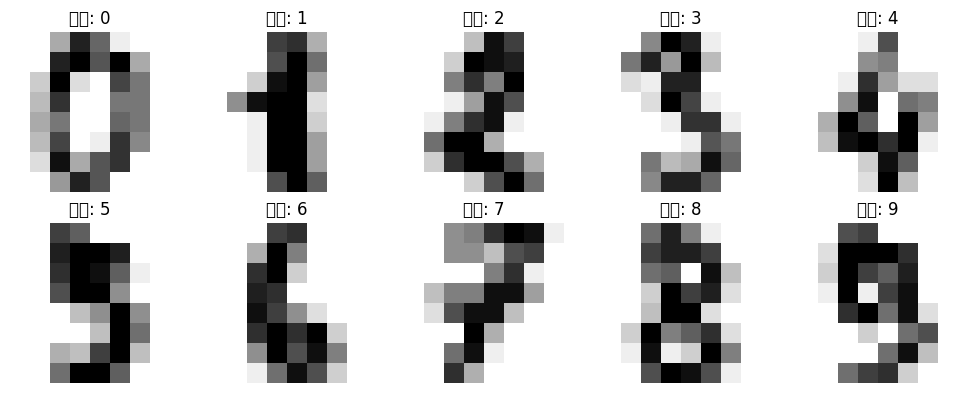
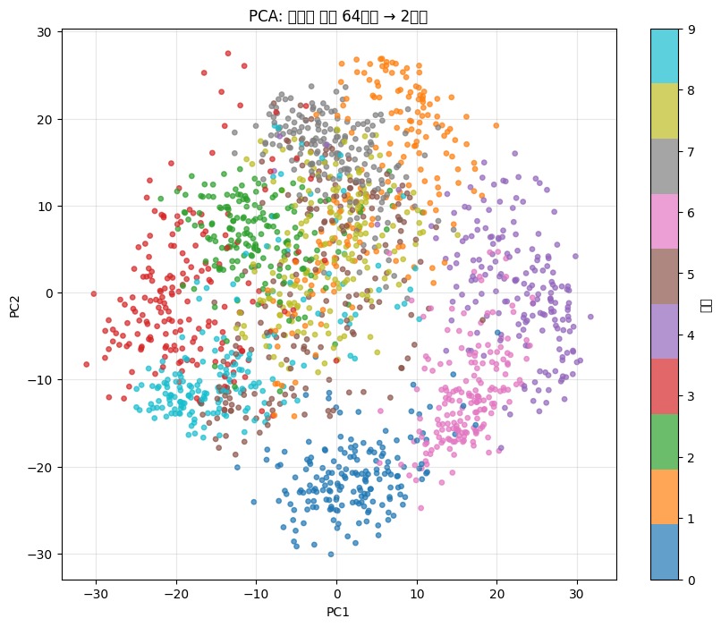
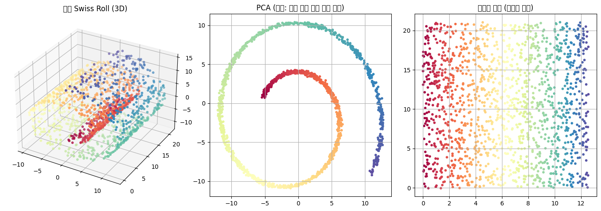
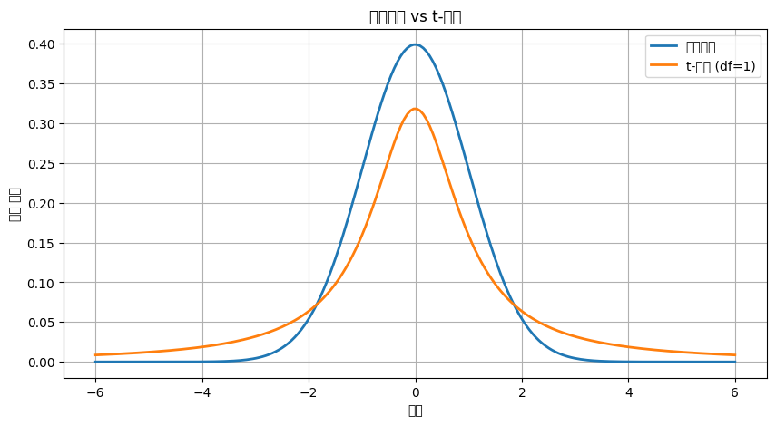
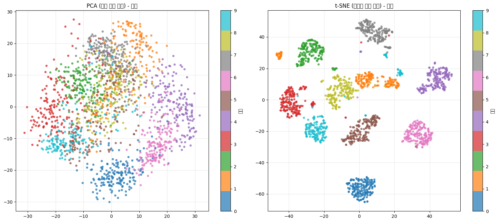
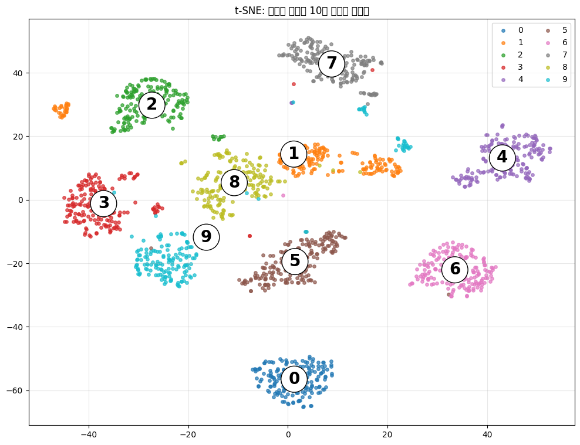
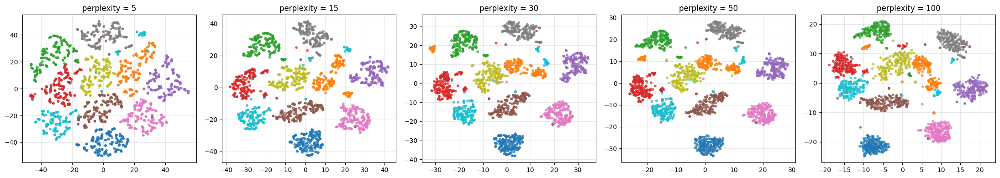
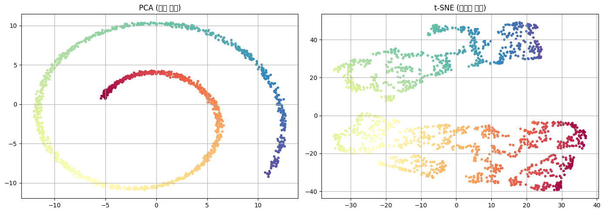

PCA의 한계와 t-SNE: 매니폴드 차원 축소 정복하기
Table of Contents
- 1. 강의 개요
- 2. 0단계: 환경 준비
- 3. 1단계: PCA 복습
- 4. 2단계: 손글씨 데이터 소개
- 5. 3단계: PCA로 MNIST 차원 축소 → 실패
- 6. 4단계: 왜 PCA가 실패했나?
- 7. 5단계: PCA의 본질적 한계 정리
- 8. 2차시: t-SNE 도입과 원리
- 9. 6단계: t-SNE란?
- 10. 7단계: t-SNE의 핵심 개념
- 11. t-SNE 직관
- 12. 8단계: 왜 t-분포를 사용하나? - 옵션
- 13. 9단계: 핵심 파라미터 - Perplexity
- 14. 10단계: t-SNE 알고리즘 단계별 동작
- 15. 11단계: MNIST에 t-SNE 적용 → 성공!
- 16. 12단계: 라벨 표시로 군집 명확히 보기
- 17. 13단계: Perplexity 튜닝 실습
- 18. 14단계: Swiss Roll에 t-SNE 적용
- 19. 15단계: t-SNE의 장점과 한계
- 20. 16단계: PCA vs t-SNE 종합 비교
- 21. 17단계: 고찰 및 토론
- 22. 18단계: 학생 실습 과제
- 23. 19단계: 다음 단계 예고
- 24. 참고 자료
1. 강의 개요
1.1. 학습 목표
- PCA의 핵심 약점(비선형 매니폴드 처리 불가) 직접 체험
- t-SNE의 원리와 동작 방식 이해
- 두 알고리즘의 차이를 시각적으로 비교
- 파라미터 튜닝(
perplexity) 실습 - 차원 축소 알고리즘 선택 기준 습득
1.2. 1차시와 2차시의 연결
[1차시] PCA 복습 ↓ 저차원 데이터 → 성공 ↓ MNIST 손글씨 → 숫자들이 뒤엉킴 (실패!) ↓ "왜 실패했나?" 분석 ↓ [2차시] "다른 방법은?" ↓ t-SNE 도입 ↓ MNIST → 0~9가 10개 섬으로 분리 (성공!) ↓ 종합 비교
2. 0단계: 환경 준비
2.1. 설명
필요 라이브러리:
numpy,matplotlib: 기본 도구sklearn.decomposition.PCA: PCA 구현sklearn.manifold.TSNE: t-SNE 구현sklearn.datasets: MNIST 손글씨, Swiss Roll
import numpy as np
import matplotlib.pyplot as plt
from sklearn.decomposition import PCA
from sklearn.manifold import TSNE
from sklearn.datasets import load_digits, make_swiss_roll
from sklearn.preprocessing import StandardScaler
np.random.seed(42)
2.2. 주의할 점
- sklearn 0.24 이상 권장
- t-SNE는 CPU에서도 수십 초 ~ 수 분 소요
- 큰 데이터(MNIST 70,000개)는 일부만 사용
3. 1단계: PCA 복습
3.1. 정의
PCA (Principal Component Analysis): 주성분 분석
- 데이터의 *분산이 가장 큰 방향*을 찾아 새 축으로 사용
- 고차원 데이터를 저차원으로 압축
- 선형 변환 (행렬 곱셈)
3.2. 동작 4단계
- 데이터를 평균 중심화 (각 feature에서 평균 빼기)
- 공분산 행렬 계산
- 공분산 행렬의 고유벡터/고유값 계산
- 분산이 큰 순서로 고유벡터 선택 → 새 축
3.3. 핵심 수식
X_centered = X - mean(X) Cov = (1/n) × X_centered.T @ X_centered eigenvalues, eigenvectors = eig(Cov) X_pca = X_centered @ top_k_eigenvectors
3.4. 핵심 가정 (★중요)
- 데이터의 중요 정보가 *분산이 큰 방향*에 있음
- 데이터가 *선형 구조*를 가짐
- 주성분들이 *서로 직교*함
- *유클리드 거리*가 의미 있음
이 가정이 깨지면 → 실패.
4. 2단계: 손글씨 데이터 소개
4.1. 설명: MNIST Digits 데이터셋
- sklearn 내장 데이터
- 8×8 픽셀 손글씨 숫자 0~9
- 64차원 (8×8) 데이터 1,797개
- 라벨: 0~9
# 데이터 로드
digits = load_digits()
X = digits.data # (1797, 64) - 1797개 샘플, 64차원
y = digits.target # (1797,) - 0~9 라벨
print(f"데이터 shape: {X.shape}")
print(f"라벨 종류: {np.unique(y)}")
print(f"라벨별 개수: {np.bincount(y)}")
데이터 shape: (1797, 64) 라벨 종류: [0 1 2 3 4 5 6 7 8 9] 라벨별 개수: [178 182 177 183 181 182 181 179 174 180]
4.2. 데이터 미리보기
# 첫 10개 숫자 시각화
fig, axes = plt.subplots(2, 5, figsize=(10, 4))
for i, ax in enumerate(axes.flat):
ax.imshow(digits.images[i], cmap='gray_r')
ax.set_title(f"라벨: {digits.target[i]}")
ax.axis('off')
plt.tight_layout()
plt.show()
/tmp/ipykernel_127340/2609864352.py:7: UserWarning: Glyph 46972 (\N{HANGUL SYLLABLE RA}) missing from font(s) DejaVu Sans.
plt.tight_layout()
/tmp/ipykernel_127340/2609864352.py:7: UserWarning: Glyph 48296 (\N{HANGUL SYLLABLE BEL}) missing from font(s) DejaVu Sans.
plt.tight_layout()
/home/minux/.virtualenvs/ml/lib/python3.12/site-packages/IPython/core/pylabtools.py:170: UserWarning: Glyph 46972 (\N{HANGUL SYLLABLE RA}) missing from font(s) DejaVu Sans.
fig.canvas.print_figure(bytes_io, **kw)
/home/minux/.virtualenvs/ml/lib/python3.12/site-packages/IPython/core/pylabtools.py:170: UserWarning: Glyph 48296 (\N{HANGUL SYLLABLE BEL}) missing from font(s) DejaVu Sans.
fig.canvas.print_figure(bytes_io, **kw)

4.3. 관찰
- 각 이미지는 8×8 = 64개의 픽셀값
- 사람이 64차원 데이터를 직접 볼 수 없음
- 2차원으로 축소 후 시각화 필요
4.4. 토론거리
- 64차원 → 2차원: 정보 손실 불가피
- 그래도 같은 숫자끼리 가깝게 배치되면 → 성공
- 다른 숫자가 섞이면 → 실패
5. 3단계: PCA로 MNIST 차원 축소 → 실패
5.1. 설명
64차원 → 2차원 축소 시도.
# PCA 적용
pca = PCA(n_components=2, random_state=42)
X_pca = pca.fit_transform(X)
print(f"원본 shape: {X.shape}")
print(f"PCA 후 shape: {X_pca.shape}")
print(f"설명된 분산 비율: {pca.explained_variance_ratio_}")
print(f"누적 분산 비율: {pca.explained_variance_ratio_.sum():.2%}")
원본 shape: (1797, 64) PCA 후 shape: (1797, 2) 설명된 분산 비율: [0.14890594 0.13618771] 누적 분산 비율: 28.51%
5.2. 관찰
- 2개 주성분이 전체 분산의 약 28% 설명
- 72% 정보 손실
5.3. 시각화
plt.figure(figsize=(10, 8))
scatter = plt.scatter(X_pca[:, 0], X_pca[:, 1], c=y, cmap='tab10',
s=15, alpha=0.7)
plt.colorbar(scatter, label='숫자')
plt.title("PCA: 손글씨 숫자 64차원 → 2차원")
plt.xlabel("PC1")
plt.ylabel("PC2")
plt.grid(True, alpha=0.3)
plt.show()
/home/minux/.virtualenvs/ml/lib/python3.12/site-packages/IPython/core/pylabtools.py:170: UserWarning: Glyph 49552 (\N{HANGUL SYLLABLE SON}) missing from font(s) DejaVu Sans.
fig.canvas.print_figure(bytes_io, **kw)
/home/minux/.virtualenvs/ml/lib/python3.12/site-packages/IPython/core/pylabtools.py:170: UserWarning: Glyph 44544 (\N{HANGUL SYLLABLE GEUL}) missing from font(s) DejaVu Sans.
fig.canvas.print_figure(bytes_io, **kw)
/home/minux/.virtualenvs/ml/lib/python3.12/site-packages/IPython/core/pylabtools.py:170: UserWarning: Glyph 50472 (\N{HANGUL SYLLABLE SSI}) missing from font(s) DejaVu Sans.
fig.canvas.print_figure(bytes_io, **kw)
/home/minux/.virtualenvs/ml/lib/python3.12/site-packages/IPython/core/pylabtools.py:170: UserWarning: Glyph 49707 (\N{HANGUL SYLLABLE SUS}) missing from font(s) DejaVu Sans.
fig.canvas.print_figure(bytes_io, **kw)
/home/minux/.virtualenvs/ml/lib/python3.12/site-packages/IPython/core/pylabtools.py:170: UserWarning: Glyph 51088 (\N{HANGUL SYLLABLE JA}) missing from font(s) DejaVu Sans.
fig.canvas.print_figure(bytes_io, **kw)
/home/minux/.virtualenvs/ml/lib/python3.12/site-packages/IPython/core/pylabtools.py:170: UserWarning: Glyph 52264 (\N{HANGUL SYLLABLE CA}) missing from font(s) DejaVu Sans.
fig.canvas.print_figure(bytes_io, **kw)
/home/minux/.virtualenvs/ml/lib/python3.12/site-packages/IPython/core/pylabtools.py:170: UserWarning: Glyph 50896 (\N{HANGUL SYLLABLE WEON}) missing from font(s) DejaVu Sans.
fig.canvas.print_figure(bytes_io, **kw)

5.4. 관찰 포인트
- 색깔(숫자)들이 서로 뒤엉킴
- 0과 6, 1과 7, 4와 9 등이 겹침
- 어떤 숫자가 어느 영역인지 구분 불가
- 완전 실패!
6. 4단계: 왜 PCA가 실패했나?
6.1. 실패의 본질
PCA는 선형 투영. 데이터를 *직선 방향*으로 누름.
손글씨 숫자 데이터의 진짜 구조: - 64차원 공간 안의 복잡한 곡면(매니폴드) - 숫자 '3'은 곡선 형태로 분포 - 숫자 '8'은 다른 곡선 형태 - 이 곡면들이 64차원에서 얽혀 있음 PCA의 한계: - 곡면을 직선으로만 누름 - 멀리 떨어진 점이 투영 후 가까워질 수 있음 - 가까운 점이 투영 후 멀어질 수 있음
6.2. 비유: 종이접기
- 64차원 → “복잡하게 접힌 종이”
- PCA: “종이를 위에서 누름” → 정보 손실
- 필요한 것: “종이를 부드럽게 펼치는 방법”
6.3. Swiss Roll로 확인
# Swiss Roll: 둘둘 말린 종이 모양
X_swiss, color_swiss = make_swiss_roll(n_samples=1500, noise=0.1, random_state=42)
# 3D 시각화
fig = plt.figure(figsize=(14, 5))
ax1 = fig.add_subplot(131, projection='3d')
ax1.scatter(X_swiss[:, 0], X_swiss[:, 1], X_swiss[:, 2],
c=color_swiss, cmap='Spectral', s=10)
ax1.set_title("원본 Swiss Roll (3D)")
# PCA로 3D → 2D
pca_swiss = PCA(n_components=2).fit_transform(X_swiss)
ax2 = fig.add_subplot(132)
ax2.scatter(pca_swiss[:, 0], pca_swiss[:, 1], c=color_swiss, cmap='Spectral', s=10)
ax2.set_title("PCA (실패: 둘둘 말린 채로 평면 투영)")
ax2.grid(True)
# 이상적 결과: 펼쳐진 종이
theta = (color_swiss - color_swiss.min()) / (color_swiss.max() - color_swiss.min()) * 4 * np.pi
ideal = np.column_stack([theta, X_swiss[:, 1]])
ax3 = fig.add_subplot(133)
ax3.scatter(ideal[:, 0], ideal[:, 1], c=color_swiss, cmap='Spectral', s=10)
ax3.set_title("이상적 결과 (펼쳐진 종이)")
ax3.grid(True)
plt.tight_layout()
plt.show()
/tmp/ipykernel_127340/3009218026.py:27: UserWarning: Glyph 50896 (\N{HANGUL SYLLABLE WEON}) missing from font(s) DejaVu Sans.
plt.tight_layout()
/tmp/ipykernel_127340/3009218026.py:27: UserWarning: Glyph 48376 (\N{HANGUL SYLLABLE BON}) missing from font(s) DejaVu Sans.
plt.tight_layout()
/tmp/ipykernel_127340/3009218026.py:27: UserWarning: Glyph 49892 (\N{HANGUL SYLLABLE SIL}) missing from font(s) DejaVu Sans.
plt.tight_layout()
/tmp/ipykernel_127340/3009218026.py:27: UserWarning: Glyph 54056 (\N{HANGUL SYLLABLE PAE}) missing from font(s) DejaVu Sans.
plt.tight_layout()
/tmp/ipykernel_127340/3009218026.py:27: UserWarning: Glyph 46168 (\N{HANGUL SYLLABLE DUL}) missing from font(s) DejaVu Sans.
plt.tight_layout()
/tmp/ipykernel_127340/3009218026.py:27: UserWarning: Glyph 47568 (\N{HANGUL SYLLABLE MAL}) missing from font(s) DejaVu Sans.
plt.tight_layout()
/tmp/ipykernel_127340/3009218026.py:27: UserWarning: Glyph 47536 (\N{HANGUL SYLLABLE RIN}) missing from font(s) DejaVu Sans.
plt.tight_layout()
/tmp/ipykernel_127340/3009218026.py:27: UserWarning: Glyph 52292 (\N{HANGUL SYLLABLE CAE}) missing from font(s) DejaVu Sans.
plt.tight_layout()
/tmp/ipykernel_127340/3009218026.py:27: UserWarning: Glyph 47196 (\N{HANGUL SYLLABLE RO}) missing from font(s) DejaVu Sans.
plt.tight_layout()
/tmp/ipykernel_127340/3009218026.py:27: UserWarning: Glyph 54217 (\N{HANGUL SYLLABLE PYEONG}) missing from font(s) DejaVu Sans.
plt.tight_layout()
/tmp/ipykernel_127340/3009218026.py:27: UserWarning: Glyph 47732 (\N{HANGUL SYLLABLE MYEON}) missing from font(s) DejaVu Sans.
plt.tight_layout()
/tmp/ipykernel_127340/3009218026.py:27: UserWarning: Glyph 53804 (\N{HANGUL SYLLABLE TU}) missing from font(s) DejaVu Sans.
plt.tight_layout()
/tmp/ipykernel_127340/3009218026.py:27: UserWarning: Glyph 50689 (\N{HANGUL SYLLABLE YEONG}) missing from font(s) DejaVu Sans.
plt.tight_layout()
/tmp/ipykernel_127340/3009218026.py:27: UserWarning: Glyph 51060 (\N{HANGUL SYLLABLE I}) missing from font(s) DejaVu Sans.
plt.tight_layout()
/tmp/ipykernel_127340/3009218026.py:27: UserWarning: Glyph 49345 (\N{HANGUL SYLLABLE SANG}) missing from font(s) DejaVu Sans.
plt.tight_layout()
/tmp/ipykernel_127340/3009218026.py:27: UserWarning: Glyph 51201 (\N{HANGUL SYLLABLE JEOG}) missing from font(s) DejaVu Sans.
plt.tight_layout()
/tmp/ipykernel_127340/3009218026.py:27: UserWarning: Glyph 44208 (\N{HANGUL SYLLABLE GYEOL}) missing from font(s) DejaVu Sans.
plt.tight_layout()
/tmp/ipykernel_127340/3009218026.py:27: UserWarning: Glyph 44284 (\N{HANGUL SYLLABLE GWA}) missing from font(s) DejaVu Sans.
plt.tight_layout()
/tmp/ipykernel_127340/3009218026.py:27: UserWarning: Glyph 54204 (\N{HANGUL SYLLABLE PYEOL}) missing from font(s) DejaVu Sans.
plt.tight_layout()
/tmp/ipykernel_127340/3009218026.py:27: UserWarning: Glyph 52432 (\N{HANGUL SYLLABLE CYEO}) missing from font(s) DejaVu Sans.
plt.tight_layout()
/tmp/ipykernel_127340/3009218026.py:27: UserWarning: Glyph 51652 (\N{HANGUL SYLLABLE JIN}) missing from font(s) DejaVu Sans.
plt.tight_layout()
/tmp/ipykernel_127340/3009218026.py:27: UserWarning: Glyph 51333 (\N{HANGUL SYLLABLE JONG}) missing from font(s) DejaVu Sans.
plt.tight_layout()
/home/minux/.virtualenvs/ml/lib/python3.12/site-packages/IPython/core/pylabtools.py:170: UserWarning: Glyph 50896 (\N{HANGUL SYLLABLE WEON}) missing from font(s) DejaVu Sans.
fig.canvas.print_figure(bytes_io, **kw)
/home/minux/.virtualenvs/ml/lib/python3.12/site-packages/IPython/core/pylabtools.py:170: UserWarning: Glyph 48376 (\N{HANGUL SYLLABLE BON}) missing from font(s) DejaVu Sans.
fig.canvas.print_figure(bytes_io, **kw)
/home/minux/.virtualenvs/ml/lib/python3.12/site-packages/IPython/core/pylabtools.py:170: UserWarning: Glyph 49892 (\N{HANGUL SYLLABLE SIL}) missing from font(s) DejaVu Sans.
fig.canvas.print_figure(bytes_io, **kw)
/home/minux/.virtualenvs/ml/lib/python3.12/site-packages/IPython/core/pylabtools.py:170: UserWarning: Glyph 54056 (\N{HANGUL SYLLABLE PAE}) missing from font(s) DejaVu Sans.
fig.canvas.print_figure(bytes_io, **kw)
/home/minux/.virtualenvs/ml/lib/python3.12/site-packages/IPython/core/pylabtools.py:170: UserWarning: Glyph 46168 (\N{HANGUL SYLLABLE DUL}) missing from font(s) DejaVu Sans.
fig.canvas.print_figure(bytes_io, **kw)
/home/minux/.virtualenvs/ml/lib/python3.12/site-packages/IPython/core/pylabtools.py:170: UserWarning: Glyph 47568 (\N{HANGUL SYLLABLE MAL}) missing from font(s) DejaVu Sans.
fig.canvas.print_figure(bytes_io, **kw)
/home/minux/.virtualenvs/ml/lib/python3.12/site-packages/IPython/core/pylabtools.py:170: UserWarning: Glyph 47536 (\N{HANGUL SYLLABLE RIN}) missing from font(s) DejaVu Sans.
fig.canvas.print_figure(bytes_io, **kw)
/home/minux/.virtualenvs/ml/lib/python3.12/site-packages/IPython/core/pylabtools.py:170: UserWarning: Glyph 52292 (\N{HANGUL SYLLABLE CAE}) missing from font(s) DejaVu Sans.
fig.canvas.print_figure(bytes_io, **kw)
/home/minux/.virtualenvs/ml/lib/python3.12/site-packages/IPython/core/pylabtools.py:170: UserWarning: Glyph 47196 (\N{HANGUL SYLLABLE RO}) missing from font(s) DejaVu Sans.
fig.canvas.print_figure(bytes_io, **kw)
/home/minux/.virtualenvs/ml/lib/python3.12/site-packages/IPython/core/pylabtools.py:170: UserWarning: Glyph 54217 (\N{HANGUL SYLLABLE PYEONG}) missing from font(s) DejaVu Sans.
fig.canvas.print_figure(bytes_io, **kw)
/home/minux/.virtualenvs/ml/lib/python3.12/site-packages/IPython/core/pylabtools.py:170: UserWarning: Glyph 47732 (\N{HANGUL SYLLABLE MYEON}) missing from font(s) DejaVu Sans.
fig.canvas.print_figure(bytes_io, **kw)
/home/minux/.virtualenvs/ml/lib/python3.12/site-packages/IPython/core/pylabtools.py:170: UserWarning: Glyph 53804 (\N{HANGUL SYLLABLE TU}) missing from font(s) DejaVu Sans.
fig.canvas.print_figure(bytes_io, **kw)
/home/minux/.virtualenvs/ml/lib/python3.12/site-packages/IPython/core/pylabtools.py:170: UserWarning: Glyph 50689 (\N{HANGUL SYLLABLE YEONG}) missing from font(s) DejaVu Sans.
fig.canvas.print_figure(bytes_io, **kw)
/home/minux/.virtualenvs/ml/lib/python3.12/site-packages/IPython/core/pylabtools.py:170: UserWarning: Glyph 51060 (\N{HANGUL SYLLABLE I}) missing from font(s) DejaVu Sans.
fig.canvas.print_figure(bytes_io, **kw)
/home/minux/.virtualenvs/ml/lib/python3.12/site-packages/IPython/core/pylabtools.py:170: UserWarning: Glyph 49345 (\N{HANGUL SYLLABLE SANG}) missing from font(s) DejaVu Sans.
fig.canvas.print_figure(bytes_io, **kw)
/home/minux/.virtualenvs/ml/lib/python3.12/site-packages/IPython/core/pylabtools.py:170: UserWarning: Glyph 51201 (\N{HANGUL SYLLABLE JEOG}) missing from font(s) DejaVu Sans.
fig.canvas.print_figure(bytes_io, **kw)
/home/minux/.virtualenvs/ml/lib/python3.12/site-packages/IPython/core/pylabtools.py:170: UserWarning: Glyph 44208 (\N{HANGUL SYLLABLE GYEOL}) missing from font(s) DejaVu Sans.
fig.canvas.print_figure(bytes_io, **kw)
/home/minux/.virtualenvs/ml/lib/python3.12/site-packages/IPython/core/pylabtools.py:170: UserWarning: Glyph 44284 (\N{HANGUL SYLLABLE GWA}) missing from font(s) DejaVu Sans.
fig.canvas.print_figure(bytes_io, **kw)
/home/minux/.virtualenvs/ml/lib/python3.12/site-packages/IPython/core/pylabtools.py:170: UserWarning: Glyph 54204 (\N{HANGUL SYLLABLE PYEOL}) missing from font(s) DejaVu Sans.
fig.canvas.print_figure(bytes_io, **kw)
/home/minux/.virtualenvs/ml/lib/python3.12/site-packages/IPython/core/pylabtools.py:170: UserWarning: Glyph 52432 (\N{HANGUL SYLLABLE CYEO}) missing from font(s) DejaVu Sans.
fig.canvas.print_figure(bytes_io, **kw)
/home/minux/.virtualenvs/ml/lib/python3.12/site-packages/IPython/core/pylabtools.py:170: UserWarning: Glyph 51652 (\N{HANGUL SYLLABLE JIN}) missing from font(s) DejaVu Sans.
fig.canvas.print_figure(bytes_io, **kw)
/home/minux/.virtualenvs/ml/lib/python3.12/site-packages/IPython/core/pylabtools.py:170: UserWarning: Glyph 51333 (\N{HANGUL SYLLABLE JONG}) missing from font(s) DejaVu Sans.
fig.canvas.print_figure(bytes_io, **kw)

6.4. 핵심 통찰
- PCA: 둘둘 말린 종이를 측면에서 본 모습
- 이상적: 종이를 펼친 모습
- 같은 색의 점들이 원래 가까웠는데 PCA에서는 멀리 떨어짐
7. 5단계: PCA의 본질적 한계 정리
7.1. 핵심 한계
| 한계 | 설명 |
|---|---|
| 선형 가정 | 데이터가 선형 구조라고 가정 |
| 전역 구조 우선 | 분산이 큰 방향만 봄 |
| 거리 왜곡 | 매니폴드에서 측지선 거리 무시 |
| 비선형 분리 불가 | 곡면 데이터 펼치기 불가능 |
7.2. 이 한계를 보완하려면?
두 가지 방향:
- 커널 트릭 사용 (Kernel PCA)
- 이웃 관계 보존*에 집중 → *t-SNE
7.3. 1차시 정리
- PCA는 선형 구조에만 유효
- 비선형 매니폴드(MNIST, Swiss Roll) 처리 불가
- 같은 숫자끼리 뒤엉킴
- 다음 시간: t-SNE로 해결
8. 2차시: t-SNE 도입과 원리
9. 6단계: t-SNE란?
9.1. 정의
t-SNE: t-Distributed Stochastic Neighbor Embedding
- 한국어: t-분포 확률적 이웃 임베딩
- 2008년 Laurens van der Maaten과 Geoffrey Hinton 제안
- 고차원 데이터 시각화의 표준 알고리즘
9.2. 핵심 아이디어
“고차원에서 가까운 점들은 저차원에서도 가깝게 유지.” “이웃 관계를 확률로 표현하고, 그 확률 분포를 보존.”
9.3. PCA와의 근본 차이
| 항목 | PCA | t-SNE |
|---|---|---|
| 변환 종류 | 선형 | 비선형 |
| 기준 | 분산 최대화 | 이웃 관계 보존 |
| 결정성 | 항상 같은 결과 | 매번 다름 (확률적) |
| 거리 | 유클리드 (전역) | 이웃 (지역) |
| 새 데이터 | 적용 가능 | 적용 불가 |
| 속도 | 빠름 | 느림 |
| 시각화 | 보통 | 매우 우수 |
10. 7단계: t-SNE의 핵심 개념
10.1. 3단계 핵심 개념
10.1.1. 개념 1: 고차원에서의 유사도 (확률로 표현)
- 점 xi 주변의 다른 점 xj가 이웃일 확률 P(j|i)
- 가우시안 분포 사용
- 가까운 점 → 높은 확률
- 먼 점 → 낮은 확률
수식:
P(j|i) = exp(-||x_i - x_j||² / 2σ_i²) / Σ exp(-||x_i - x_k||² / 2σ_i²)
10.1.2. 개념 2: 저차원에서의 유사도 (t-분포 사용)
- 저차원 점 yi 주변의 yj 유사도 Q(j|i)
- t-분포 (자유도 1) 사용 (꼬리가 두꺼움)
- 멀리 있는 점들이 잘 분리되도록
수식:
Q(j|i) = (1 + ||y_i - y_j||²)^(-1) / Σ (1 + ||y_i - y_k||²)^(-1)
10.1.3. 개념 3: 두 분포의 차이 최소화
- KL Divergence(쿨백-라이블러 발산)로 P와 Q의 차이 측정
- 경사하강법(gradient descent)으로 yi 위치 조정
- 두 분포가 비슷해지면 → 이웃 관계 보존됨
수식:
Cost = KL(P || Q) = Σ P(i,j) × log(P(i,j) / Q(i,j))
11. t-SNE 직관
11.1. 1. 한 줄 요약
“고차원에서 친한 점들이 저차원에서도 친한 채로 남도록 자리 배치”
11.2. 2. 핵심 비유: 파티 자리 배치
- 64차원 공간 = 거대한 강당
- 2차원 평면 = 좌석표
- 목표: *친구 관계 유지*하며 옮기기
11.3. 3. PCA vs t-SNE
| 항목 | PCA | t-SNE |
|---|---|---|
| 관점 | 전체 분산 | 이웃 관계 |
| 방식 | 위에서 누르기 | 친구끼리 모이기 |
| 우선 | 큰 그림 | 디테일 (가까운 점) |
11.4. 4. 3단계 동작
11.4.1. 단계 1: 고차원에서 “친한 정도” 측정
- 가까울수록 높은 확률
- 가우시안 분포 사용
11.4.2. 단계 2: 저차원에 무작위 배치
- 점들을 평면에 흩뿌림
11.4.3. 단계 3: 친밀도 일치하도록 반복 이동
- 친한 점 → 가까이
- 안 친한 점 → 멀리
- 수렴할 때까지 반복
11.5. 5. t-분포의 역할 (꼬리 두꺼움)
- 군집끼리 밀어내는 힘 발생
- 군집 사이가 자연스럽게 벌어짐
- 시각적으로 깔끔한 분리
11.6. 6. MNIST 결과 비교
| 알고리즘 | 결과 |
|---|---|
| PCA | 숫자들이 뒤섞임 |
| t-SNE | 0~9가 10개의 섬으로 분리 |
11.7. 7. 한계 (직관적)
| 한계 | 의미 |
|---|---|
| 거리 의미 없음 | 상대적 위치만 의미 있음 |
| 매번 다른 결과 | 초기 무작위 배치 영향 |
| 새 데이터 불가 | 한 번 학습 후 적용 불가능 |
| 느린 속도 | 큰 데이터에 부적합 |
12. 8단계: 왜 t-분포를 사용하나? - 옵션
12.1. 가우시안 vs t-분포
from scipy import stats
x = np.linspace(-6, 6, 200)
gaussian = stats.norm.pdf(x, 0, 1)
t_dist = stats.t.pdf(x, df=1)
plt.figure(figsize=(10, 5))
plt.plot(x, gaussian, label='가우시안', linewidth=2)
plt.plot(x, t_dist, label='t-분포 (df=1)', linewidth=2)
plt.title("가우시안 vs t-분포")
plt.xlabel("거리")
plt.ylabel("확률 밀도")
plt.legend()
plt.grid(True)
plt.show()
/home/minux/.virtualenvs/ml/lib/python3.12/site-packages/IPython/core/pylabtools.py:170: UserWarning: Glyph 54869 (\N{HANGUL SYLLABLE HWAG}) missing from font(s) DejaVu Sans.
fig.canvas.print_figure(bytes_io, **kw)
/home/minux/.virtualenvs/ml/lib/python3.12/site-packages/IPython/core/pylabtools.py:170: UserWarning: Glyph 47456 (\N{HANGUL SYLLABLE RYUL}) missing from font(s) DejaVu Sans.
fig.canvas.print_figure(bytes_io, **kw)
/home/minux/.virtualenvs/ml/lib/python3.12/site-packages/IPython/core/pylabtools.py:170: UserWarning: Glyph 48128 (\N{HANGUL SYLLABLE MIL}) missing from font(s) DejaVu Sans.
fig.canvas.print_figure(bytes_io, **kw)
/home/minux/.virtualenvs/ml/lib/python3.12/site-packages/IPython/core/pylabtools.py:170: UserWarning: Glyph 46020 (\N{HANGUL SYLLABLE DO}) missing from font(s) DejaVu Sans.
fig.canvas.print_figure(bytes_io, **kw)
/home/minux/.virtualenvs/ml/lib/python3.12/site-packages/IPython/core/pylabtools.py:170: UserWarning: Glyph 44032 (\N{HANGUL SYLLABLE GA}) missing from font(s) DejaVu Sans.
fig.canvas.print_figure(bytes_io, **kw)
/home/minux/.virtualenvs/ml/lib/python3.12/site-packages/IPython/core/pylabtools.py:170: UserWarning: Glyph 50864 (\N{HANGUL SYLLABLE U}) missing from font(s) DejaVu Sans.
fig.canvas.print_figure(bytes_io, **kw)
/home/minux/.virtualenvs/ml/lib/python3.12/site-packages/IPython/core/pylabtools.py:170: UserWarning: Glyph 49884 (\N{HANGUL SYLLABLE SI}) missing from font(s) DejaVu Sans.
fig.canvas.print_figure(bytes_io, **kw)
/home/minux/.virtualenvs/ml/lib/python3.12/site-packages/IPython/core/pylabtools.py:170: UserWarning: Glyph 50504 (\N{HANGUL SYLLABLE AN}) missing from font(s) DejaVu Sans.
fig.canvas.print_figure(bytes_io, **kw)
/home/minux/.virtualenvs/ml/lib/python3.12/site-packages/IPython/core/pylabtools.py:170: UserWarning: Glyph 48516 (\N{HANGUL SYLLABLE BUN}) missing from font(s) DejaVu Sans.
fig.canvas.print_figure(bytes_io, **kw)
/home/minux/.virtualenvs/ml/lib/python3.12/site-packages/IPython/core/pylabtools.py:170: UserWarning: Glyph 54252 (\N{HANGUL SYLLABLE PO}) missing from font(s) DejaVu Sans.
fig.canvas.print_figure(bytes_io, **kw)
/home/minux/.virtualenvs/ml/lib/python3.12/site-packages/IPython/core/pylabtools.py:170: UserWarning: Glyph 44144 (\N{HANGUL SYLLABLE GEO}) missing from font(s) DejaVu Sans.
fig.canvas.print_figure(bytes_io, **kw)
/home/minux/.virtualenvs/ml/lib/python3.12/site-packages/IPython/core/pylabtools.py:170: UserWarning: Glyph 47532 (\N{HANGUL SYLLABLE RI}) missing from font(s) DejaVu Sans.
fig.canvas.print_figure(bytes_io, **kw)

12.2. 핵심 통찰
- t-분포는 꼬리가 두꺼움
- 멀리 있는 점에도 어느 정도 확률 부여
- 효과: 군집끼리 더 멀리 떨어지도록 밀어냄
- “Crowding Problem” 해결
12.3. Crowding Problem이란?
- 고차원에서는 멀리 있는 점이 많음
- 저차원에서 그 모든 점을 표현할 공간 부족
- 점들이 중앙에 뭉치는 문제 발생
- t-분포가 이 문제 해결
13. 9단계: 핵심 파라미터 - Perplexity
13.1. 정의
- 각 점이 고려할 이웃의 유효 개수
- 가우시안의 분산 σi를 결정
- 일반적 범위: 5 ~ 50
13.2. Perplexity의 영향
| 값 | 영향 |
|---|---|
| 작음 (5) | 매우 지역적 패턴 강조 |
| 중간(30) | 균형 (권장 기본값) |
| 큼 (50) | 더 넓은 이웃 고려 |
| 매우 큼 | 거의 PCA처럼 동작 |
13.3. 데이터 크기에 따른 권장값
- 작은 데이터 (< 1,000): perplexity = 5~15
- 중간 데이터 (1,000~10,000): perplexity = 30 (기본값)
- 큰 데이터 (> 10,000): perplexity = 50~100
14. 10단계: t-SNE 알고리즘 단계별 동작
14.1. 동작 순서
1. 고차원 데이터 X 입력 2. 각 점 쌍의 고차원 유사도 P(i,j) 계산 (가우시안) 3. 저차원 점들 y_i를 무작위 초기화 4. 저차원 유사도 Q(i,j) 계산 (t-분포) 5. KL Divergence 계산 (P와 Q의 차이) 6. 경사하강법으로 y_i 위치 조정 7. 5~6 반복 (수렴할 때까지) 8. 최종 y 반환
14.2. 알고리즘 흐름도
시작 ↓ 고차원 X ↓ P(i,j) 계산 ↓ y_i 무작위 초기화 ↓ 반복: ├ Q(i,j) 계산 ├ KL Divergence 계산 ├ gradient 계산 └ y_i 업데이트 ↓ 수렴 ↓ 저차원 Y 출력
15. 11단계: MNIST에 t-SNE 적용 → 성공!
15.1. 실습
# t-SNE 적용 (시간 소요: 약 30초 ~ 1분)
tsne = TSNE(n_components=2, perplexity=30, random_state=42, max_iter=1000)
X_tsne = tsne.fit_transform(X)
print(f"t-SNE 후 shape: {X_tsne.shape}")
t-SNE 후 shape: (1797, 2)
15.2. PCA vs t-SNE 비교
fig, axes = plt.subplots(1, 2, figsize=(16, 7))
# PCA
scatter1 = axes[0].scatter(X_pca[:, 0], X_pca[:, 1], c=y, cmap='tab10', s=15, alpha=0.7)
axes[0].set_title("PCA (선형 차원 축소) - 실패")
axes[0].grid(True, alpha=0.3)
plt.colorbar(scatter1, ax=axes[0], label='숫자')
# t-SNE
scatter2 = axes[1].scatter(X_tsne[:, 0], X_tsne[:, 1], c=y, cmap='tab10', s=15, alpha=0.7)
axes[1].set_title("t-SNE (비선형 차원 축소) - 성공")
axes[1].grid(True, alpha=0.3)
plt.colorbar(scatter2, ax=axes[1], label='숫자')
plt.tight_layout()
plt.show()
/tmp/ipykernel_127340/3702495896.py:15: UserWarning: Glyph 49440 (\N{HANGUL SYLLABLE SEON}) missing from font(s) DejaVu Sans.
plt.tight_layout()
/tmp/ipykernel_127340/3702495896.py:15: UserWarning: Glyph 54805 (\N{HANGUL SYLLABLE HYEONG}) missing from font(s) DejaVu Sans.
plt.tight_layout()
/tmp/ipykernel_127340/3702495896.py:15: UserWarning: Glyph 52264 (\N{HANGUL SYLLABLE CA}) missing from font(s) DejaVu Sans.
plt.tight_layout()
/tmp/ipykernel_127340/3702495896.py:15: UserWarning: Glyph 50896 (\N{HANGUL SYLLABLE WEON}) missing from font(s) DejaVu Sans.
plt.tight_layout()
/tmp/ipykernel_127340/3702495896.py:15: UserWarning: Glyph 52629 (\N{HANGUL SYLLABLE CUG}) missing from font(s) DejaVu Sans.
plt.tight_layout()
/tmp/ipykernel_127340/3702495896.py:15: UserWarning: Glyph 49548 (\N{HANGUL SYLLABLE SO}) missing from font(s) DejaVu Sans.
plt.tight_layout()
/tmp/ipykernel_127340/3702495896.py:15: UserWarning: Glyph 49892 (\N{HANGUL SYLLABLE SIL}) missing from font(s) DejaVu Sans.
plt.tight_layout()
/tmp/ipykernel_127340/3702495896.py:15: UserWarning: Glyph 54056 (\N{HANGUL SYLLABLE PAE}) missing from font(s) DejaVu Sans.
plt.tight_layout()
/tmp/ipykernel_127340/3702495896.py:15: UserWarning: Glyph 49707 (\N{HANGUL SYLLABLE SUS}) missing from font(s) DejaVu Sans.
plt.tight_layout()
/tmp/ipykernel_127340/3702495896.py:15: UserWarning: Glyph 51088 (\N{HANGUL SYLLABLE JA}) missing from font(s) DejaVu Sans.
plt.tight_layout()
/tmp/ipykernel_127340/3702495896.py:15: UserWarning: Glyph 48708 (\N{HANGUL SYLLABLE BI}) missing from font(s) DejaVu Sans.
plt.tight_layout()
/tmp/ipykernel_127340/3702495896.py:15: UserWarning: Glyph 49457 (\N{HANGUL SYLLABLE SEONG}) missing from font(s) DejaVu Sans.
plt.tight_layout()
/tmp/ipykernel_127340/3702495896.py:15: UserWarning: Glyph 44277 (\N{HANGUL SYLLABLE GONG}) missing from font(s) DejaVu Sans.
plt.tight_layout()
/home/minux/.virtualenvs/ml/lib/python3.12/site-packages/IPython/core/pylabtools.py:170: UserWarning: Glyph 49440 (\N{HANGUL SYLLABLE SEON}) missing from font(s) DejaVu Sans.
fig.canvas.print_figure(bytes_io, **kw)
/home/minux/.virtualenvs/ml/lib/python3.12/site-packages/IPython/core/pylabtools.py:170: UserWarning: Glyph 54805 (\N{HANGUL SYLLABLE HYEONG}) missing from font(s) DejaVu Sans.
fig.canvas.print_figure(bytes_io, **kw)
/home/minux/.virtualenvs/ml/lib/python3.12/site-packages/IPython/core/pylabtools.py:170: UserWarning: Glyph 52264 (\N{HANGUL SYLLABLE CA}) missing from font(s) DejaVu Sans.
fig.canvas.print_figure(bytes_io, **kw)
/home/minux/.virtualenvs/ml/lib/python3.12/site-packages/IPython/core/pylabtools.py:170: UserWarning: Glyph 50896 (\N{HANGUL SYLLABLE WEON}) missing from font(s) DejaVu Sans.
fig.canvas.print_figure(bytes_io, **kw)
/home/minux/.virtualenvs/ml/lib/python3.12/site-packages/IPython/core/pylabtools.py:170: UserWarning: Glyph 52629 (\N{HANGUL SYLLABLE CUG}) missing from font(s) DejaVu Sans.
fig.canvas.print_figure(bytes_io, **kw)
/home/minux/.virtualenvs/ml/lib/python3.12/site-packages/IPython/core/pylabtools.py:170: UserWarning: Glyph 49548 (\N{HANGUL SYLLABLE SO}) missing from font(s) DejaVu Sans.
fig.canvas.print_figure(bytes_io, **kw)
/home/minux/.virtualenvs/ml/lib/python3.12/site-packages/IPython/core/pylabtools.py:170: UserWarning: Glyph 49892 (\N{HANGUL SYLLABLE SIL}) missing from font(s) DejaVu Sans.
fig.canvas.print_figure(bytes_io, **kw)
/home/minux/.virtualenvs/ml/lib/python3.12/site-packages/IPython/core/pylabtools.py:170: UserWarning: Glyph 54056 (\N{HANGUL SYLLABLE PAE}) missing from font(s) DejaVu Sans.
fig.canvas.print_figure(bytes_io, **kw)
/home/minux/.virtualenvs/ml/lib/python3.12/site-packages/IPython/core/pylabtools.py:170: UserWarning: Glyph 48708 (\N{HANGUL SYLLABLE BI}) missing from font(s) DejaVu Sans.
fig.canvas.print_figure(bytes_io, **kw)
/home/minux/.virtualenvs/ml/lib/python3.12/site-packages/IPython/core/pylabtools.py:170: UserWarning: Glyph 49457 (\N{HANGUL SYLLABLE SEONG}) missing from font(s) DejaVu Sans.
fig.canvas.print_figure(bytes_io, **kw)
/home/minux/.virtualenvs/ml/lib/python3.12/site-packages/IPython/core/pylabtools.py:170: UserWarning: Glyph 44277 (\N{HANGUL SYLLABLE GONG}) missing from font(s) DejaVu Sans.
fig.canvas.print_figure(bytes_io, **kw)
/home/minux/.virtualenvs/ml/lib/python3.12/site-packages/IPython/core/pylabtools.py:170: UserWarning: Glyph 49707 (\N{HANGUL SYLLABLE SUS}) missing from font(s) DejaVu Sans.
fig.canvas.print_figure(bytes_io, **kw)
/home/minux/.virtualenvs/ml/lib/python3.12/site-packages/IPython/core/pylabtools.py:170: UserWarning: Glyph 51088 (\N{HANGUL SYLLABLE JA}) missing from font(s) DejaVu Sans.
fig.canvas.print_figure(bytes_io, **kw)

15.3. 관찰
- t-SNE: 0~9가 *10개의 분리된 섬*으로 깔끔하게 분리
- 비슷하게 생긴 숫자(예: 4와 9)는 가까이 위치
- 완전히 다른 숫자(예: 0과 1)는 멀리 위치
- 시각적 충격
16. 12단계: 라벨 표시로 군집 명확히 보기
plt.figure(figsize=(12, 9))
# 각 숫자별로 색 다르게
colors = plt.cm.tab10(np.linspace(0, 1, 10))
for digit in range(10):
mask = y == digit
plt.scatter(X_tsne[mask, 0], X_tsne[mask, 1],
c=[colors[digit]], label=f'{digit}', s=15, alpha=0.7)
# 각 군집 중앙에 숫자 표시
for digit in range(10):
mask = y == digit
center = X_tsne[mask].mean(axis=0)
plt.annotate(f'{digit}', center, fontsize=20, fontweight='bold',
ha='center', va='center',
bbox=dict(boxstyle='circle', facecolor='white', edgecolor='black'))
plt.title("t-SNE: 손글씨 숫자가 10개 섬으로 분리됨")
plt.legend(loc='best', ncol=2)
plt.grid(True, alpha=0.3)
plt.show()
/home/minux/.virtualenvs/ml/lib/python3.12/site-packages/IPython/core/pylabtools.py:170: UserWarning: Glyph 49552 (\N{HANGUL SYLLABLE SON}) missing from font(s) DejaVu Sans.
fig.canvas.print_figure(bytes_io, **kw)
/home/minux/.virtualenvs/ml/lib/python3.12/site-packages/IPython/core/pylabtools.py:170: UserWarning: Glyph 44544 (\N{HANGUL SYLLABLE GEUL}) missing from font(s) DejaVu Sans.
fig.canvas.print_figure(bytes_io, **kw)
/home/minux/.virtualenvs/ml/lib/python3.12/site-packages/IPython/core/pylabtools.py:170: UserWarning: Glyph 50472 (\N{HANGUL SYLLABLE SSI}) missing from font(s) DejaVu Sans.
fig.canvas.print_figure(bytes_io, **kw)
/home/minux/.virtualenvs/ml/lib/python3.12/site-packages/IPython/core/pylabtools.py:170: UserWarning: Glyph 44032 (\N{HANGUL SYLLABLE GA}) missing from font(s) DejaVu Sans.
fig.canvas.print_figure(bytes_io, **kw)
/home/minux/.virtualenvs/ml/lib/python3.12/site-packages/IPython/core/pylabtools.py:170: UserWarning: Glyph 44060 (\N{HANGUL SYLLABLE GAE}) missing from font(s) DejaVu Sans.
fig.canvas.print_figure(bytes_io, **kw)
/home/minux/.virtualenvs/ml/lib/python3.12/site-packages/IPython/core/pylabtools.py:170: UserWarning: Glyph 49452 (\N{HANGUL SYLLABLE SEOM}) missing from font(s) DejaVu Sans.
fig.canvas.print_figure(bytes_io, **kw)
/home/minux/.virtualenvs/ml/lib/python3.12/site-packages/IPython/core/pylabtools.py:170: UserWarning: Glyph 51004 (\N{HANGUL SYLLABLE EU}) missing from font(s) DejaVu Sans.
fig.canvas.print_figure(bytes_io, **kw)
/home/minux/.virtualenvs/ml/lib/python3.12/site-packages/IPython/core/pylabtools.py:170: UserWarning: Glyph 47196 (\N{HANGUL SYLLABLE RO}) missing from font(s) DejaVu Sans.
fig.canvas.print_figure(bytes_io, **kw)
/home/minux/.virtualenvs/ml/lib/python3.12/site-packages/IPython/core/pylabtools.py:170: UserWarning: Glyph 48516 (\N{HANGUL SYLLABLE BUN}) missing from font(s) DejaVu Sans.
fig.canvas.print_figure(bytes_io, **kw)
/home/minux/.virtualenvs/ml/lib/python3.12/site-packages/IPython/core/pylabtools.py:170: UserWarning: Glyph 47532 (\N{HANGUL SYLLABLE RI}) missing from font(s) DejaVu Sans.
fig.canvas.print_figure(bytes_io, **kw)
/home/minux/.virtualenvs/ml/lib/python3.12/site-packages/IPython/core/pylabtools.py:170: UserWarning: Glyph 46120 (\N{HANGUL SYLLABLE DOEM}) missing from font(s) DejaVu Sans.
fig.canvas.print_figure(bytes_io, **kw)

17. 13단계: Perplexity 튜닝 실습
perplexity_values = [5, 15, 30, 50, 100]
fig, axes = plt.subplots(1, len(perplexity_values), figsize=(22, 4))
for ax, perp in zip(axes, perplexity_values):
tsne_p = TSNE(n_components=2, perplexity=perp, random_state=42, max_iter=500)
X_tsne_p = tsne_p.fit_transform(X)
ax.scatter(X_tsne_p[:, 0], X_tsne_p[:, 1], c=y, cmap='tab10', s=10, alpha=0.7)
ax.set_title(f"perplexity = {perp}")
ax.grid(True, alpha=0.3)
plt.tight_layout()
plt.show()

17.1. 관찰
perplexity=5: 매우 지역적, 많은 작은 군집perplexity=15: 적당한 분리perplexity=30: 최적 (10개 섬 명확)perplexity=50: 군집이 약간 합쳐짐perplexity=100: PCA에 가까운 형태
18. 14단계: Swiss Roll에 t-SNE 적용
# Swiss Roll에 t-SNE
tsne_swiss = TSNE(n_components=2, perplexity=30, random_state=42).fit_transform(X_swiss)
fig, axes = plt.subplots(1, 2, figsize=(14, 5))
axes[0].scatter(pca_swiss[:, 0], pca_swiss[:, 1], c=color_swiss, cmap='Spectral', s=10)
axes[0].set_title("PCA (둘둘 말림)")
axes[0].grid(True)
axes[1].scatter(tsne_swiss[:, 0], tsne_swiss[:, 1], c=color_swiss, cmap='Spectral', s=10)
axes[1].set_title("t-SNE (펼쳐진 종이)")
axes[1].grid(True)
plt.tight_layout()
plt.show()
/tmp/ipykernel_127340/735532518.py:14: UserWarning: Glyph 46168 (\N{HANGUL SYLLABLE DUL}) missing from font(s) DejaVu Sans.
plt.tight_layout()
/tmp/ipykernel_127340/735532518.py:14: UserWarning: Glyph 47568 (\N{HANGUL SYLLABLE MAL}) missing from font(s) DejaVu Sans.
plt.tight_layout()
/tmp/ipykernel_127340/735532518.py:14: UserWarning: Glyph 47548 (\N{HANGUL SYLLABLE RIM}) missing from font(s) DejaVu Sans.
plt.tight_layout()
/tmp/ipykernel_127340/735532518.py:14: UserWarning: Glyph 54204 (\N{HANGUL SYLLABLE PYEOL}) missing from font(s) DejaVu Sans.
plt.tight_layout()
/tmp/ipykernel_127340/735532518.py:14: UserWarning: Glyph 52432 (\N{HANGUL SYLLABLE CYEO}) missing from font(s) DejaVu Sans.
plt.tight_layout()
/tmp/ipykernel_127340/735532518.py:14: UserWarning: Glyph 51652 (\N{HANGUL SYLLABLE JIN}) missing from font(s) DejaVu Sans.
plt.tight_layout()
/tmp/ipykernel_127340/735532518.py:14: UserWarning: Glyph 51333 (\N{HANGUL SYLLABLE JONG}) missing from font(s) DejaVu Sans.
plt.tight_layout()
/tmp/ipykernel_127340/735532518.py:14: UserWarning: Glyph 51060 (\N{HANGUL SYLLABLE I}) missing from font(s) DejaVu Sans.
plt.tight_layout()
/home/minux/.virtualenvs/ml/lib/python3.12/site-packages/IPython/core/pylabtools.py:170: UserWarning: Glyph 46168 (\N{HANGUL SYLLABLE DUL}) missing from font(s) DejaVu Sans.
fig.canvas.print_figure(bytes_io, **kw)
/home/minux/.virtualenvs/ml/lib/python3.12/site-packages/IPython/core/pylabtools.py:170: UserWarning: Glyph 47568 (\N{HANGUL SYLLABLE MAL}) missing from font(s) DejaVu Sans.
fig.canvas.print_figure(bytes_io, **kw)
/home/minux/.virtualenvs/ml/lib/python3.12/site-packages/IPython/core/pylabtools.py:170: UserWarning: Glyph 47548 (\N{HANGUL SYLLABLE RIM}) missing from font(s) DejaVu Sans.
fig.canvas.print_figure(bytes_io, **kw)
/home/minux/.virtualenvs/ml/lib/python3.12/site-packages/IPython/core/pylabtools.py:170: UserWarning: Glyph 54204 (\N{HANGUL SYLLABLE PYEOL}) missing from font(s) DejaVu Sans.
fig.canvas.print_figure(bytes_io, **kw)
/home/minux/.virtualenvs/ml/lib/python3.12/site-packages/IPython/core/pylabtools.py:170: UserWarning: Glyph 52432 (\N{HANGUL SYLLABLE CYEO}) missing from font(s) DejaVu Sans.
fig.canvas.print_figure(bytes_io, **kw)
/home/minux/.virtualenvs/ml/lib/python3.12/site-packages/IPython/core/pylabtools.py:170: UserWarning: Glyph 51652 (\N{HANGUL SYLLABLE JIN}) missing from font(s) DejaVu Sans.
fig.canvas.print_figure(bytes_io, **kw)
/home/minux/.virtualenvs/ml/lib/python3.12/site-packages/IPython/core/pylabtools.py:170: UserWarning: Glyph 51333 (\N{HANGUL SYLLABLE JONG}) missing from font(s) DejaVu Sans.
fig.canvas.print_figure(bytes_io, **kw)
/home/minux/.virtualenvs/ml/lib/python3.12/site-packages/IPython/core/pylabtools.py:170: UserWarning: Glyph 51060 (\N{HANGUL SYLLABLE I}) missing from font(s) DejaVu Sans.
fig.canvas.print_figure(bytes_io, **kw)

18.1. 관찰
- PCA: 색깔이 섞임 (말린 종이를 측면에서 봄)
- t-SNE: 색깔이 순서대로 정렬 (종이를 펼친 모습)
19. 15단계: t-SNE의 장점과 한계
19.1. 장점
| 장점 | 설명 |
|---|---|
| 비선형 처리 | 매니폴드 펼치기 가능 |
| 시각화 우수 | 군집 구조 명확히 표현 |
| 이웃 관계 보존 | 비슷한 점 → 비슷한 위치 |
| Crowding 해결 | t-분포로 점들 잘 분산 |
19.2. 한계
| 한계 | 설명 |
|---|---|
| 느린 속도 | 큰 데이터에 부적합 |
| 비결정성 | 매번 다른 결과 (randomstate 필요) |
| 새 데이터 적용 불가 | transform() 메서드 없음 |
| 전역 구조 손실 | 거리의 절대값 의미 없음 |
| 파라미터 민감 | perplexity에 따라 결과 크게 변함 |
19.3. 거리의 절대값 의미 없음
주의: t-SNE 결과에서 군집 간 거리는 *상대적 의미*만 있음.
- 두 군집 사이 거리가 멀다고 해서 그만큼 다르다는 보장 없음
- *군집의 분리 여부*에 집중
- *거리 값 자체*에 의미 부여하면 안 됨
20. 16단계: PCA vs t-SNE 종합 비교
20.1. 비교 표
| 항목 | PCA | t-SNE |
|---|---|---|
| 변환 종류 | 선형 | 비선형 |
| 보존 대상 | 전역 분산 | 지역 이웃 |
| 결정성 | 항상 동일 | 확률적 |
| 속도 | 매우 빠름 | 느림 |
| 새 데이터 | transform() OK |
불가 |
| 시각화 품질 | 보통 | 우수 |
| 해석 가능성 | 주성분 의미 | 축의 의미 없음 |
| 적합 데이터 | 선형 구조 | 매니폴드, 군집 시각화 |
20.2. 언제 PCA?
- 빠른 차원 축소 필요
- 다른 알고리즘의 전처리
- 새 데이터에 적용 필요
- *해석 가능*한 주성분 원함
- 데이터가 선형 구조
20.3. 언제 t-SNE?
- *시각화*가 목적
- 데이터가 비선형 매니폴드
- 군집 구조 탐색
- 속도보다 품질 우선
20.4. 둘 다 부족할 때
- 더 빠른 비선형 → UMAP
- 새 데이터 적용 + 비선형 → Autoencoder
- 그래프 구조 → Spectral Embedding
21. 17단계: 고찰 및 토론
21.1. 토론거리
- PCA가 MNIST에서 실패하는 근본 원인?
- 손글씨 숫자는 비선형 매니폴드 구조
- 선형 투영으로 펼치기 불가능
- t-SNE가 모든 PCA 문제의 해결책인가?
- 아님. 속도, 새 데이터 적용 불가가 단점
- 시각화에는 우수, 전처리에는 부적합
- t-SNE에서 군집 사이 거리가 크다 = 둘이 많이 다르다?
- 아님. 거리의 절대값에 의미 없음
- 군집 분리 여부에만 집중
- Perplexity를 너무 작게/크게 하면?
- 작게: 작은 군집 폭증, 노이즈에 민감
- 크게: 군집 합쳐짐, PCA에 가까워짐
- 현실에서 어느 알고리즘을 먼저 시도?
- PCA로 빠른 탐색 → 비선형 의심되면 t-SNE
22. 18단계: 학생 실습 과제
22.1. 과제 1: 다양한 데이터셋
- Iris, Wine, Breast Cancer 데이터에 PCA와 t-SNE 적용
- 어느 쪽이 더 잘 동작하는지 비교
22.2. 과제 2: 파라미터 그리드 탐색
- perplexity, niter, learningrate 조합 실험
- 가장 명확한 분리를 보이는 조합 찾기
22.3. 과제 3: Fashion-MNIST
- 옷 이미지 데이터셋에 적용
- T-shirt, Trouser, Coat 등이 어떻게 분리되는지 관찰
22.4. 과제 4: 단어 임베딩 시각화
- Word2Vec 또는 GloVe 임베딩에 t-SNE 적용
- 비슷한 의미 단어가 가깝게 모이는지 확인
23. 19단계: 다음 단계 예고
23.1. 정리
- PCA의 본질적 한계 (선형 가정)
- t-SNE의 확률 기반 비선형 접근
- 파라미터 튜닝의 중요성
- 알고리즘 선택의 기준
23.2. 다음 학습 후보
- UMAP: t-SNE의 진화형, 빠르고 전역 구조 보존
- Kernel PCA: 커널 트릭으로 PCA 확장
- Autoencoder: 신경망 기반 차원 축소
- Isomap: 측지선 거리 기반 차원 축소
24. 참고 자료
- van der Maaten & Hinton (2008), “Visualizing Data using t-SNE”
- scikit-learn t-SNE 공식 문서
- Distill.pub의 “How to Use t-SNE Effectively” (시각화 가이드)
- “혼자 공부하는 머신러닝+딥러닝” (한빛미디어)
```